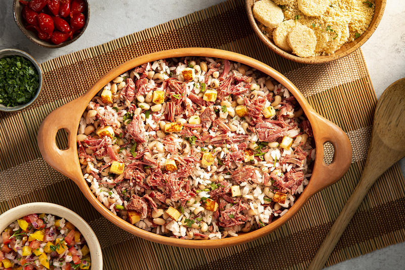
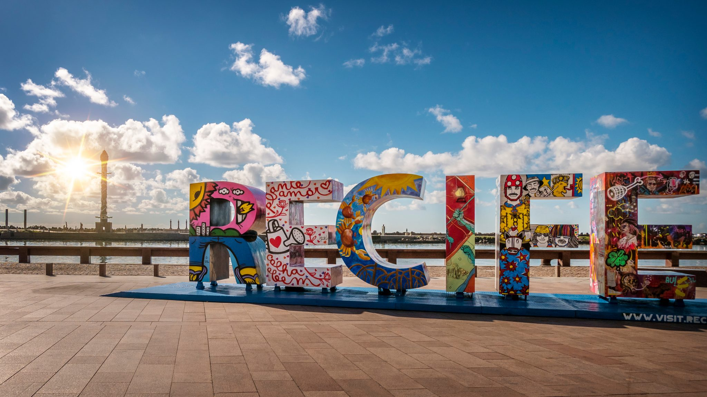
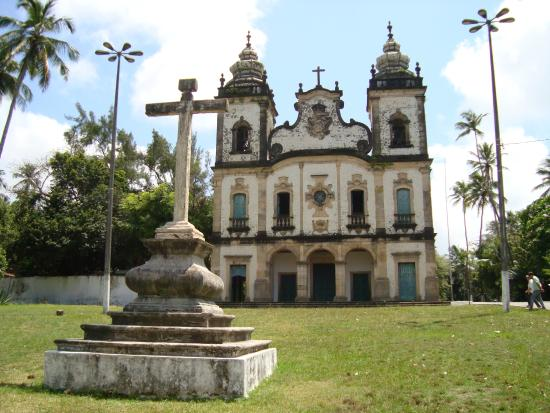
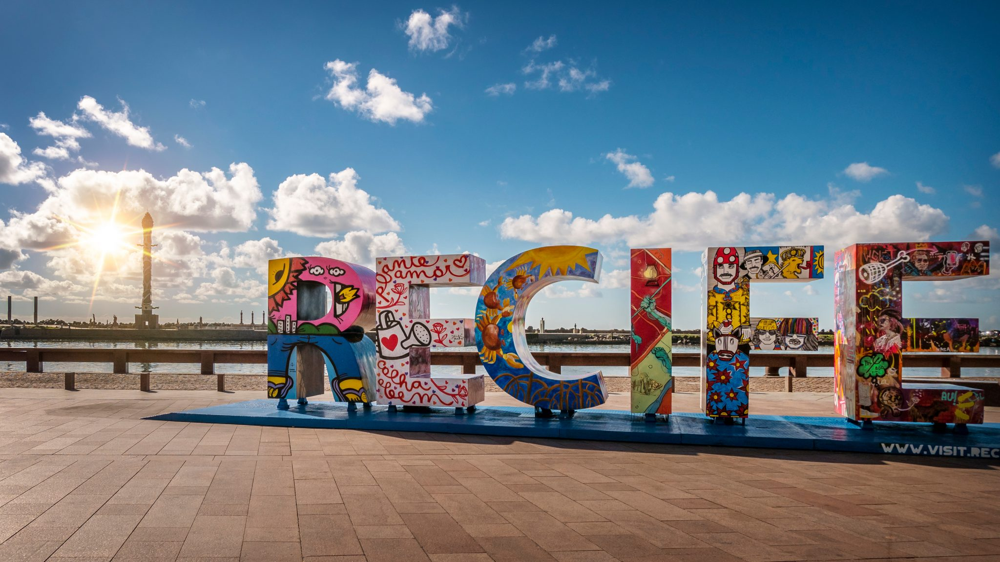
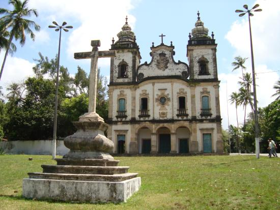

Região Nordeste do Brasil
A cultura do Nordeste apresenta características próprias herdadas da interação da cultura dos
colonizadores portugueses,
dos negros e dos índios.
É importante destacar que a cultura representa uma complexa teia. Nela estão incluídos conhecimentos,
costumes, artes,
crenças, cultos religiosos, literatura popular, danças e hábitos de determinado grupo.
A cultura do Nordeste brasileiro (que compreende os estados do Maranhão, Piauí, Ceará, Rio Grande do
Norte, Paraíba,
Pernambuco, Alagoas, Sergipe e Bahia) desenvolveu hábitos próprios com relação ao mundo e às
manifestações culturais.
Esses hábitos foram transmitidos de geração em geração.

tapioca
Descrição:
A tapioca é umas das iguarias mais famosas da região norte e nordeste do Brasil. Ela
pode ser consumida com ou sem
manteiga, com coco e também com outros recheios como frango, queijo e atum. Há algumas opções
que são doces,
acrescentando chocolate, doce de leite…
Ingredientes:
1 kg de goma para tapioca
1 xícara de coco ralado, de preferência natural
Sal a gosto
Água para umedecer a massa
Recheio a gosto (queijo, presunto, carne, camarão, chocolate derretido, mel, calda de sorvete, doces,
sorvete, etc)

Acarajé
Descrição:
O acarajé tem origem africana e é um bolinho frito no azeite de dendê, feito com feijão
fradinho, sal, alho, gengibre,
cebola e recheado com camarão. É muito consumido no estado da Bahia! Se por lá te perguntarem se
você prefere “quente ou
frio” na verdade é referente ao nível de pimenta. Quanto mais “quente” mais apimentado será o seu
acarajé.
Ingredientes:
500 g de feijão fradinho cru
500 g de cebola
Sal a gosto
1 cebola pequena com casca
500 ml de óleo
500 ml de azeite de dendê
2 xícaras de chá de vatapá
150 g de camarão seco

Baião De Dois
Descrição:
O baião de dois é um prato feito de arroz, feijão, carne seca e queijo coalho. Há quem diga
que a origem do nome é pela
dança típica nordestina, o baião. Ele também ganhou popularidade com a música “Baião de Dois”, em
parceria com o
compositor cearense Humberto Teixeira e o pernambucano Luiz Gonzaga, o rei do baião!
Ingredientes:
5 xícaras de feijão de corda cozido
3 xícaras de arroz integral
1 linguiça calabresa cortada em cubinhos
200 g de torresmo
3 colheres de sopa de requeijão
Coentro a gosto
1 cebola picadinha
2 pimentões picados
2 dentes de alho
Pimenta-do-reino a gosto
Sal a gosto
1 fio de óleo


 


